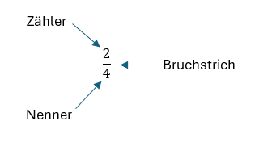
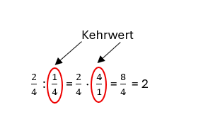

Bruchrechnen
Erklärung
Ein Bruch zeigt dir das Verhältnis zwischen einem Teil und dem Ganzen. Er erklärt dir, in wie viele gleich große Stücke etwas zerlegt wurde (Nenner) und wie viele davon du betrachtest (Zähler).

Addition
$\frac{2}{4} + \frac{1}{4} = \frac{3}{4}$
Beim Addieren von Brüchen müssen die Nenner gleich sein. Wenn sie es nicht sind, müssen sie gleichnamig gemacht werden (einen gemeinsamen Nenner finden).
- Zähler addieren.
- Den Nenner unverändert lassen.
- Ergebnis als Bruch aufschreiben.
- Wenn möglich kürzen (z. B. $\frac{6}{8} = \frac{3}{4}$).
Subtraktion
$\frac{3}{4} - \frac{1}{4} = \frac{2}{4} = \frac{1}{2}$
Auch beim Subtrahieren müssen die Brüche gleichnamig sein.
- Zähler subtrahieren.
- Den Nenner unverändert lassen.
- Ergebnis als Bruch aufschreiben.
- Wenn möglich kürzen.
Multiplikation
$\frac{2}{4} \cdot \frac{1}{4} = \frac{2}{16} = \frac{1}{8}$
Bei der Multiplikation müssen die Nenner nicht gleich sein. Man rechnet einfach "Zähler mal Zähler" und "Nenner mal Nenner".
- Die beiden Zähler multiplizieren.
- Die beiden Nenner multiplizieren.
- Ergebnis aufschreiben.
- Wenn nötig kürzen.
Division

Man dividiert durch einen Bruch, indem man mit seinem Kehrwert multipliziert.
- Kehrwert des zweiten Bruchs bilden (Zähler und Nenner tauschen).
- Die beiden Brüche nun multiplizieren (Zähler $\cdot$ Zähler, Nenner $\cdot$ Nenner).
- Ergebnis aufschreiben.
- Wenn nötig kürzen.